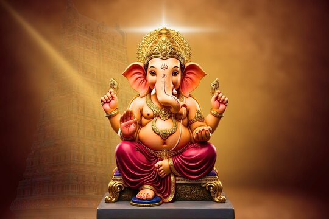
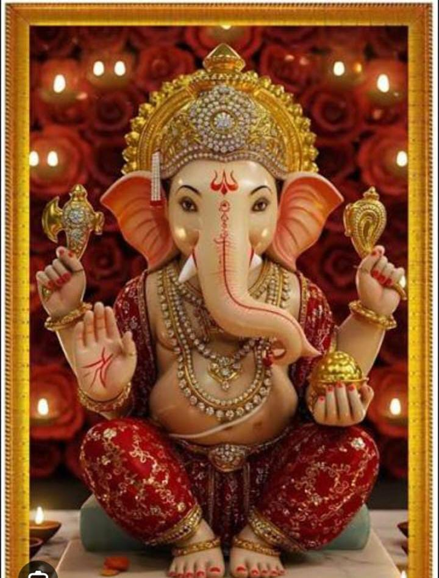

🙏 WITH DIVINE BLESSINGS 🙏

May Lord Ganesha bless you and your family with wisdom, happiness, prosperity, good health and success.
Digital Ganesh Utsav
॥ श्री गणेशाय नमः ॥
Discover the stories, mantras, music, wisdom and beauty associated with Lord Ganesha.
Learn about Lord Ganesha, his birth, symbolism and worship.
Read inspiring stories of Lord Ganesha.
Read sacred Ganesha mantras and shlokas.
View beautiful Ganesha images.
Listen to your seven devotional songs.
Test your knowledge about Lord Ganesha.
Learn how to celebrate responsibly.
Connect traditional wisdom with technology.
Create a QR experience and spread blessings.
Story, Form, Symbolism, Worship and Vinayaka Chaturthi

Lord Vinayaka, also known as Ganesha or Ganapati, is the widely worshipped elephant-headed deity in Hinduism. He is revered as the lord of wisdom, prosperity, good beginnings and the remover of obstacles.
Devotees traditionally invoke Lord Ganesha before beginning important activities such as a new venture, journey, examination, ceremony or ritual.
According to a popular traditional account, Goddess Parvati created Vinayaka from turmeric paste or material from her body while preparing to bathe. She gave him the responsibility of guarding the entrance and instructed him not to allow anyone to enter.
When Lord Shiva returned, Vinayaka followed his mother's command and stopped him from entering. A fierce misunderstanding followed between Shiva and the young guardian, resulting in Shiva severing Vinayaka's head.
Parvati was deeply distressed. To restore Vinayaka, Shiva placed the head of an elephant upon him and brought him back to life. Ganesha was then honoured as the leader of the Ganas.
They remind us to listen carefully, especially to wisdom and good advice.
The elephant represents wisdom, strength, intelligence and memory.
The single tusk is traditionally associated with retaining what is good and overcoming what is unnecessary.
It symbolises the ability to accept and digest the experiences of life.
The mouse is often associated with desires and the restless mind. Ganesha riding the mouse symbolises control over them.
The lotus represents purity, spiritual growth and rising above difficulties.
Lord Ganesha is traditionally worshipped first before many important ceremonies and new beginnings. This practice expresses the wish that obstacles be removed and the activity proceed successfully.
Ganesha Chaturthi, also known as Vinayaka Chaturthi, celebrates the birth of Lord Ganesha. Homes and public spaces are decorated, idols are installed, prayers are offered, devotional music is performed and communities come together in celebration.
Important Ganesha temples include Kanipakam Vinayaka Temple in Andhra Pradesh and Siddhivinayak Temple in Mumbai, among many other revered shrines.
Vinayaka Chaturthi is one of the most vibrant and widely celebrated Hindu festivals. It honours Lord Ganesha, who is associated with wisdom, prosperity, auspicious beginnings and the removal of obstacles.
The celebration traditionally begins on the fourth day of the waxing moon phase in the Hindu lunar month of Bhadrapada and may continue for several days, commonly up to ten days.
The sacred installation ceremony through which devotees invite the divine presence of Lord Ganesha into the idol through prayers and rituals.
A traditional sixteen-step form of worship involving various offerings, prayers and devotional practices.
The farewell prayer performed at the conclusion of the worship period.
The immersion of the idol symbolises the return of Ganesha and reminds devotees of the cycle of creation, preservation and dissolution.
Modak is traditionally associated with Lord Ganesha. It is commonly prepared with rice flour, coconut and jaggery.
The sweet interior is often associated with spiritual knowledge and bliss. It reminds devotees that true sweetness comes from wisdom and inner understanding.
Read the complete traditional stories and their meanings.
Sacred verses for prayer and devotion.
Listen to the devotional songs of Lord Ganesha.
Use the controls below to play, pause and adjust the volume.
Beautiful moments of Lord Ganesha.
Test your knowledge about Lord Ganesha.
Celebrate devotion while caring for nature.
Choose natural clay idols where possible.
Use flowers, leaves, cloth and reusable decorations.
Use designated immersion facilities where available.
Avoid unnecessary plastic and reuse decorations.
Connecting traditional wisdom with modern technology.
Ganesha represents wisdom and intelligence. Computer Science also requires logical thinking, reasoning and problem solving.
Ganesha is traditionally associated with removing obstacles. Programmers similarly solve problems by identifying and removing errors.
Technology depends on creativity and innovation. Ganesha inspires us to approach challenges with intelligence and imagination.
Artificial Intelligence uses data, patterns, reasoning and computation to solve problems.
Digital Ganesh Utsav • Spread Devotion • Share Blessings
DIGITAL GANESH UTSAV
📜 Slokas & Aartis
📖 Stories of Vinayaka
🌱 Eco-Friendly Theme
🎉 Festive Quiz!
🎵 Devotional Music
🐘 About Lord Ganesha
May Lord Ganesha remove all obstacles from your path and fill your life with wisdom, happiness, prosperity, peace and success.
Print or display this QR code. Anyone can scan it using their phone camera.
The QR code opens the Scan Ganesha website and displays the beautiful Vinayaka Chaturthi greeting first.